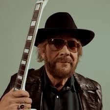

Hank Williams Jr.
Born: 26 May 1949
Age:
Years Active: 1957–present
Genre/s: Country, country rock, outlaw country, blues
Label/s: MGM, Warner Bros., Curb, Bocephus, NASH Icon
Randall Hank Williams (born May 26, 1949), known professionally as Hank Williams Jr. or Bocephus, is an American singer-songwriter and musician. His musical style has been described as a blend of rock, blues, and country. He is the son of country musician Hank Williams and the father of musicians Sam Williams, Holly Williams and Hank Williams III, and the grandfather of Coleman Williams. He is also the half-brother of Jett Williams.
Williams began his career following in his famed father's footsteps, covering his father's songs and imitating his father's style. Williams' first television appearance was in a December 1963 episode of The Ed Sullivan Show, in which at the age of fourteen he sang several songs associated with his father. The following year, he was a guest star on Shindig!.
As Williams struggled to define his own voice and place within the country music genre, his style began slowly to evolve. His career was interrupted by a near-fatal fall while he was climbing Ajax Peak in Montana on August 8, 1975. After an extended recovery, he rebuilt his career in both the country rock and outlaw country scenes. As a multi-instrumentalist, Williams' repertoire of musical instrument skills includes guitar, bass guitar, upright bass, steel guitar, banjo, dobro, piano, keyboards, saxophone, harmonica, fiddle, and drums. In 2020, Williams Jr. was inducted into the Country Music Hall of Fame.